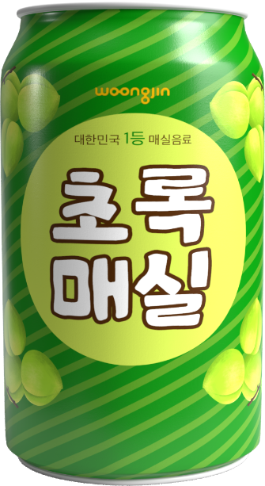
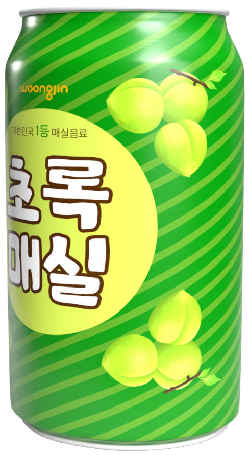
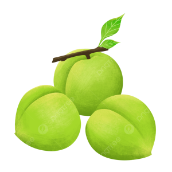
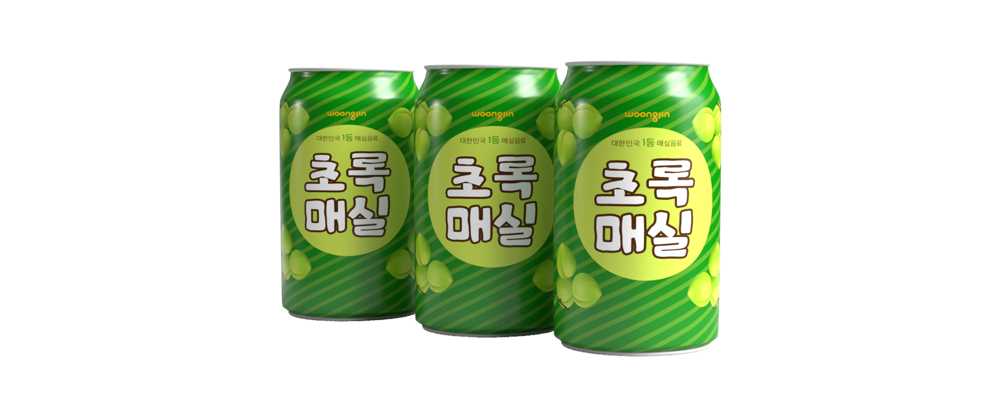

초록매실은 오렌지, 포도 등 외국 과일 주스가 주류를
이루던 과일 주스 시장에 매실이라는 소재로 음료를
만들어내
출시 1년만에 2,600억이라는 매실 시장 창출을
리드한 매실음료입니다.
지금 우리의 밥상 위에 올라와 있는 모든 것은
이미 우리 조상들이 모든 검사를 마치고, 임상 실험까지
거친 검증된 것으로 아무 의심없이 먹을 수 있습니다.
음료의 역사와 비교해봅시다.
